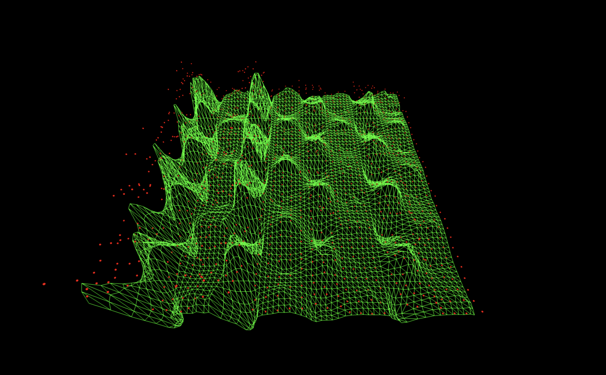

Geometric Noise Cancellation of a 5-Bit Quantum arXiv Run via Classical Distribution Subtraction
Code Walkthrough
1. Setup and Notation
Work with two completed IBM quantum experiments over the same measurement space:
A signal experiment (the actual 5-bit arXiv result JSON).
A noise-template (a 5-bit noise-variant).
Each experiment measures bitstrings b of fixed length (10 bits).
From the signal JSON we extract:
A count map:
c_sig(b) ∈ N_0
giving the number of shots that collapsed into bitstring b.
A total number of shots:
N_sig = ∑_b c_sig(b).
From the noise JSON we extract:
A count map:
c_noise(b) ∈ N_0
for the noise-dominated run.
A total number of shots:
N_noise = ∑_b c_noise(b).
Define the joint outcome space as the union of all bitstrings that appear in either run:
S = {b ∣ c_sig(b) > 0} ∪ {b ∣ c_noise(b) > 0}.
Every subsequent step is defined on this set S.
Also introduce a noise-subtraction strength parameter:
α ≥ 0,
where α = 1 represents full subtraction of the noise template, and other values can be used to under- or over-subtract by design.
2. Rescaling the Noise to the Signal Shot Budget
The key idea is that the noise run, and the signal run may have different shot counts. We want to interpret the noise template as 'what the noise would look like if it had been collected with N_sig shots', so that subtraction has a clean physical meaning.
Define a shot rescaling factor:
scale = N_sig/N_noise.
For each bitstring b ∈ S, define:
The expected signal counts (which are just the observed counts):
E_sig(b) = c_sig(b).
The expected noise counts at the signal shot budget, scaled and weighted by α:
E_noise(b) = α * scale * c_noise(b) = α * N_sig/N_noise * c_noise(b).
Thus, if the two runs had equal shots and α = 1, this reduces to subtracting counts directly. When the shots differ, the rescaling keeps the interpretation 'subtract the expected noise you would have seen in N_sig shots'.
3. Constructing the Expected Difference Distribution
For each bitstring b ∈ S, form the expected difference in counts:
E_diff(b) = E_sig(b) - E_noise(b) = c_sig(b) - α * N_sig/N_noise * c_noise(b).
This is a real-valued quantity. Some bins will be positive (signal-dominated), some near zero (noise-matched), and some negative (noise-dominated).
Then apply a small numerical threshold ε > 0 to avoid floating-point edge cases and to discard bins that are effectively zero:
If E_diff(b) > ε, keep it.
If E_diff(b) ≤ ε, treat it as zero and drop it from the positive support.
Define the positive expected set:
S_+ = {b ∈ S ∣ E_diff(b) > ε}.
On this set we define:
E_pos(b) = E_diff(b), b ∈ S_+.
If S_+ is empty or the total positive mass is effectively zero, treat that as a pathological situation where the subtraction has cancelled everything, in that case, fall back to the original signal counts c_sig(b) rather than outputting a meaningless all-zero distribution.
4. Normalizing to a Probability-Like Distribution
Assuming a nontrivial positive mass on S_+, compute the total positive expected count:
T = ∑_(b∈S_+) E_pos(b).
Then define a probability-like distribution q(b) over S_+:
q(b) = (E_pos(b))/T, b ∈ S_+.
By construction:
∑_(b∈S_+) q(b) = 1.
This q(b) is not directly observed probability from hardware, it is a derived distribution that represents the noise-subtracted, renormalized interference pattern inferred from the two runs.
5. Ideal Real-Valued Counts at the Signal Shot Budget
We now want to return to an object that looks like a backend histogram: integer counts that sum to exactly N_sig.
The ideal real-valued counts compatible with q(b) and shot budget N_sig are:
r(b) = q(b) * N_sig, b ∈ S_+.
Each r(b) is a real number that tells you how many counts this bin would receive on average if you drew N_sig samples from the ideal noise-subtracted distribution.
Then decompose each r(b) into an integer and a fractional part:
Integer part:
n_int(b) = ⌊r(b)⌋ (or equivalently, int(r(b))).
Fractional part:
f(b) = r(b) - n_int(b), 0 ≤ f(b) < 1.
Also compute the initial integer sum:
N_int = ∑_(b∈S_+) n_int(b).
In general, N_int will be less than or equal to N_sig, since taking floors throws away fractional contributions.
Define the remaining shot budget:
R = N_sig - N_int.
By construction, R is a nonnegative integer (in typical usage with floors), it measures how many more '+1' increments there are to distribute across bins to restore the total to N_sig.
6. Largest Remainder Method (Hamilton Apportionment)
To preserve the relative weights as faithfully as possible, use the Largest Remainder Method (also known as Hamilton apportionment):
First, list all b ∈ S_+ together with their fractional parts f(b).
Sort them in descending order of f(b):
f(b_1) ≥ f(b_2) ≥ ⋯ ≥ f(b_(∣S_+∣)).
Starting from i = 1 up to i = R, add one extra count to the i-th bitstring:
n_final(b_i) = n_int(b_i) + 1 for i = 1, …, R,
and
n_final(b) = n_int(b) for all other b ∈ S_+.
After this allocation:
∑_(b∈S_+) n_final(b) = N_int + R = N_sig.
This method ensures that:
Bins with larger fractional surplus f(b) are more likely to get the extra counts.
The tail structure is preserved as closely as possible to the continuous distribution q(b).
We avoid the bias introduced by repeatedly perturbing only the largest bins.
Finally, for completeness, extend this to all of S by defining:
c_clean(b) =
{ n_final(b), b ∈ S_+,
0, b ∈ S ∖ S_+.
So c_clean(b) is the integer-valued, noise-suppressed histogram over the same outcome space as the original experiments.
7. Conceptual Interpretation
Viewed conceptually, the procedure does the following:
Treats the signal run as 'signal + hardware noise'.
Treats the noise template run as a direct empirical probe of “hardware noise” alone.
Rescales the noise template to match the signal’s shot budget so that subtraction is physically meaningful.
Subtracts the scaled noise from the signal at the level of expected counts, not raw probabilities, so that α has the clear meaning, 'fraction of the expected noise to remove'.
Discards any bins where noise overwhelms the signal (negative differences).
Renormalizes the surviving structure into a proper distribution and re-quantizes it into integer counts using a mathematically clean apportionment method.
The resulting histogram c_clean(b) can be fed into my Threejs 3D interferometric renderer.
0. arXiv 5-bit Run
5-bit arXiv Paper Link

IBM Noise Variants Used
Download Full JSON Dataset (ZIP)
1. No-QFT Pure Hardware Noise (Baseline Run) Subtracted from arXiv Run


384 bitstrings survive after cancellation (out of 1024 possible).
Subtracting the pure hardware baseline flattens almost everything and leaves one extraordinarily clear dominant lane. This is very good at removing raw device bias and readout drift, but because the noise variant never saw a QFT, it doesn’t model QFT-induced imperfections. The result is that the strongest lane survives, but the other three are over-suppressed, so it’s an excellent 'global denoiser', slightly too aggressive on the weaker spectral modes.


680 bitstrings survive after cancellation (out of 1024 possible).
Mixing with this noise variant leaves a visible grid, low lane floor, and notably diffused ridges. The QFT envelope is right, but the scrambling introduces cross-axis correlations that don’t exist in the real oracle run, so this subtraction injects as much structured deformation as it removes. You still see the oracle ridge, but it’s surrounded by too much 'Fourier texture', so the cancellation is only moderate.


821 bitstrings survive after cancellation (out of 1021 possible).
Here the subtraction lowers the overall noise floor and calms the big chaotic spikes, but you still see a tessellated grid and muted four-lane structure. This means the noise variant partially matches the QFT hardware behavior but with the wrong partition, so some structured noise cancels while other components remain as faint vertical and horizontal bands. Better than a random noise template, but not as clean as some of the others.


562 bitstrings survive after cancellation (out of 1024 possible).
This one gives the cleanest four-lane picture, the lane centers are almost silent, the off-lane regions are low, and the four vertical corridors are very clearly separated. That means the noise variant has the same QFT envelope as the real circuit but no oracle structure, so subtracting it removes 'QFT-shaped hardware bias' while leaving the oracle-driven phase slope. Matching the optical bench but turning off the grating, ideal as a noise model and possibly the best noise canceler of the structures tested.


854 bitstrings survive after cancellation (out of 1023 possible).
This leaves the lanes present but messy, lots of short vertical bar segments and uneven right-side structure. Because the QFT acts on only a subspace, the noise varient doesn’t represent the full Hilbert-space noise of the real circuit. When you subtract it, some local artifacts are reduced, but global coherence is fractured, so the result looks granular rather than cleanly denoised.


428 bitstrings survive after cancellation (out of 1024 possible).
This noise variant still carries a real oracle signal. Subtracting it suppresses the shared structure and lowers the noise floor. The primary left-most interference lane stays coherent, but the remaining lanes begin to lose structure, fragment, and blend into a more turbulent central region.
In the end, this experiment mixed my arXiv 5-bit interference result with six independently executed IBM noise-variant runs, from pure hardware drift, to scrambled dual-QFT environments, to inverted partitioning, to single-QFT phase disorder, to an oracle-bearing one-QFT configuration. The goal was to see which physical noise landscape best subtracts backend bias while preserving the true interference signature. The result shows that noise cancellation is geometric, it only succeeds when the noise run shares the same computational envelope but lacks the phase relation. Among all variants, the Single-QFT scrambled run produced the cleanest cancellation, keeping the ridge architecture but suppressing incoherent background, with the pure hardware baseline coming second by flattening device drift and leaving the dominant lane intact. Taken together, the results show that backend noise can be treated not as something to eliminate blindly, but as something to sculpt, revealing signal through subtraction.
Code:
#Imports
import json
from pathlib import Path
from typing import Dict, Any
# Paths
ARXIV_JSON_PATH = Path(
"/Users/steventippeconnic/Documents/QC/Shors_ECC_5_Bit_Key_0.json"
)
NOISE_JSON_PATH = Path(
"/Users/steventippeconnic/Documents/QC/Shor_style_ECC_5_Bit_QFT_Scrambled_1QFT_Noise_0.json"
)
OUT_JSON_PATH = Path(
"/Users/steventippeconnic/Documents/QC/Shor_style_ECC_5_Bit_QFT_Scrambled_1QFT_Noise_0_Cancel.json"
)
# Subtraction strength - 1.0 = full noise template subtraction
ALPHA = 1.0
# Noise Cancellation Logic
def load_result(path: Path) -> Dict[str, Any]:
"""Load a JSON result and normalize shots to int."""
with path.open("r") as f:
data = json.load(f)
shots = data.get("shots")
# If JSON stores shots as str normalize
if isinstance(shots, str):
shots = shots.strip()
shots = int(shots)
else:
shots = int(shots)
data["shots"] = shots
return data
def noise_cancel_counts(
key_data: Dict[str, Any],
noise_data: Dict[str, Any],
alpha: float = 1.0,
eps: float = 1e-12,
) -> Dict[str, int]:
"""
Produces a noise-suppressed count dictionary using:
p̃(b) ∝ max( p_sig(b) − α · p_noise(b) , 0 )
but implemented in the expected-count domain to handle unequal shots.
Then:
Compute expected "signal - rescaled noise" counts.
Discard negative bins.
Renormalize and re-quantize to exactly key_shots using Largest Remainder.
"""
key_counts: Dict[str, int] = key_data["counts"]
noise_counts: Dict[str, int] = noise_data["counts"]
key_shots = int(key_data["shots"])
noise_shots = int(noise_data["shots"])
all_bitstrings = set(key_counts.keys()) | set(noise_counts.keys())
# Work in expected-count space so alpha has a clean meaning:
# expected_sig(b) = c_sig(b)
# expected_noise(b) = alpha * (key_shots / noise_shots) * c_noise(b)
# c_diff(b) = expected_sig(b) - expected_noise(b)
# If key_shots == noise_shots, this reduces to c_sig - alpha * c_noise.
positive_expected: Dict[str, float] = {}
if noise_shots == 0:
# Degenerate case, just return the original signal
return dict(key_counts)
scale_factor = key_shots / noise_shots # <-- IMPORTANT: key_shots / noise_shots
for b in all_bitstrings:
c_sig = key_counts.get(b, 0)
c_noise = noise_counts.get(b, 0)
expected_diff = c_sig - alpha * scale_factor * c_noise
if expected_diff > eps: # keep tiny positive values
positive_expected[b] = expected_diff
# Pathological case: everything cancelled -> fall back to original signal
if not positive_expected:
print("Warning: Complete cancellation detected - falling back to signal counts.")
return dict(key_counts)
total_positive = sum(positive_expected.values())
if total_positive <= eps:
print("Warning: Total positive mass vanished - falling back to signal counts.")
return dict(key_counts)
# Largest Remainder Method (Hamilton apportionment)
clean_counts: Dict[str, int] = {}
fractional_parts: Dict[str, float] = {}
for b, exp_val in positive_expected.items():
contribution = exp_val / total_positive * key_shots
integer_part = int(contribution)
clean_counts[b] = integer_part
fractional_parts[b] = contribution - integer_part
# Distribute remaining shots to bins with largest fractional parts
remaining = key_shots - sum(clean_counts.values())
if remaining != 0:
sorted_by_frac = sorted(
fractional_parts,
key=fractional_parts.get,
reverse=True,
)
L = len(sorted_by_frac)
for i in range(abs(remaining)):
b = sorted_by_frac[i % L]
if remaining > 0:
clean_counts[b] += 1
else:
if clean_counts[b] > 0:
clean_counts[b] -= 1
# Ensure every bitstring that ever appeared is in the output (with 0 if needed)
for b in all_bitstrings:
clean_counts.setdefault(b, 0)
# Final sanity check
final_total = sum(clean_counts.values())
if final_total != key_shots:
print(
f"Warning: final_total={final_total} != key_shots={key_shots}; "
"small discrepancy due to rounding."
)
return clean_counts
def main():
print("Loading signal (key-breaking) run...")
key_data = load_result(ARXIV_JSON_PATH)
print(f" → {key_data.get('experiment', 'unknown')} | {key_data['shots']} shots")
print("Loading noise template run...")
noise_data = load_result(NOISE_JSON_PATH)
print(f" → {noise_data.get('experiment', 'unknown')} | {noise_data['shots']} shots")
print(f"\nPerforming noise cancellation (α = {ALPHA})...")
clean_counts = noise_cancel_counts(key_data, noise_data, alpha=ALPHA)
populated = sum(1 for v in clean_counts.values() if v > 0)
print(
f"Done! {populated} bitstrings survive after cancellation "
f"(out of {len(clean_counts)} possible)."
)
# Build output JSON - preserve metadata from the original cryptographic run
output = {
"experiment": f"{key_data.get('experiment', 'Shors_ECC_5_Bit_Key_0')}_noise_cancelled",
"backend": key_data.get("backend"),
"physical_qubits": key_data.get("physical_qubits"),
"shots": key_data["shots"],
"counts": clean_counts,
}
# Save result
OUT_JSON_PATH.parent.mkdir(parents=True, exist_ok=True)
with OUT_JSON_PATH.open("w") as f:
json.dump(output, f, indent=2)
print(f"\nNoise-cancelled result saved to:")
print(f" {OUT_JSON_PATH.resolve()}")
if __name__ == "__main__":
main()
# End